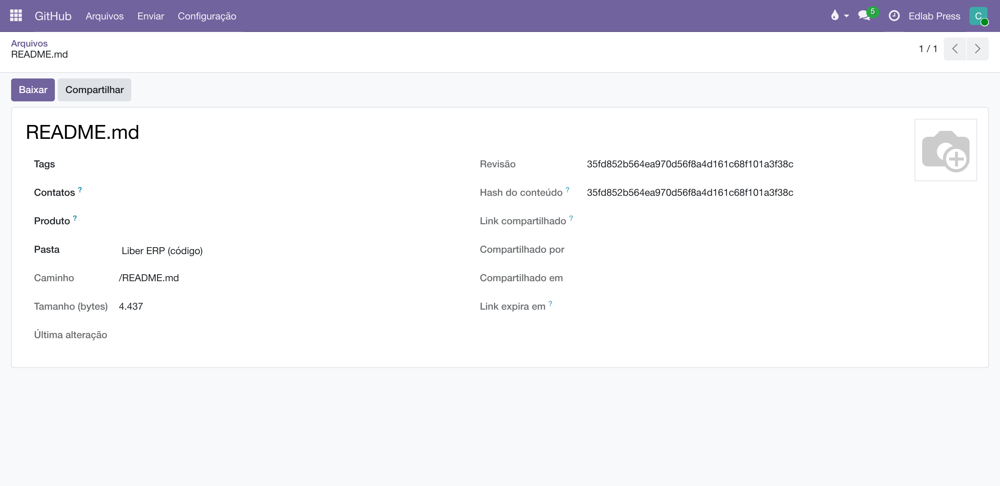

O mesmo porteiro, na estante onde a produção versiona os originais: um repositório vira pasta, cada envio vira commit, cada revisão tem SHA — e o link compartilhado, pela primeira vez, não fura o portão.
Este app é um corpo do chassi Cloud Files — o mesmo do Dropbox e do Drive. A disciplina é herdada e idêntica: acesso por grupos pasta a pasta, multiempresa, espelho de metadados, tags e vínculos, mapear é de administrador, escrever exige grupo de escrita. O que muda é o vocabulário, traduzido do Git:
O GitHub é um app à parte, com tile própria na tela inicial — não uma seção dentro do Dropbox. E o que lá se chama Pastas, aqui se chama Repositórios: é a mesma tela, com o nome que o provedor usa. Quem procura "Repositórios" dentro do Dropbox não encontra.
| No Liber | No GitHub |
|---|---|
| Pasta | Um repositório (ID externo = dono/repositório), com subpasta opcional no campo Caminho (/ sozinho = a raiz) e Branch (vazio = a padrão). |
| Enviar | Um commit liber: arquivo.pdf na branch da pasta — um por arquivo: mandou cinco de uma vez, são cinco commits. Nunca sobrescreve: nome repetido vira arquivo (1).ext. |
| Revisão | O SHA do blob — versionamento de graça, mudou o conteúdo, mudou o SHA. |
| Link compartilhado | A página do arquivo no GitHub — só abre para quem enxerga o repositório. Por isso não expira: a ficha registra honestamente "sem validade". |

A configuração acontece em dois lugares diferentes, e é fácil se perder entre eles porque os dois se chamam GitHub. Cada passo abaixo começa dizendo onde ele é: no site do GitHub, que é github.com no navegador, ou no Odoo, que é este sistema — onde GitHub é o nome de um app, com tile própria na tela inicial, ao lado do Dropbox e do Drive. Os dois primeiros passos são lá fora; os dois últimos, aqui dentro.
Sincronizar espelha a árvore da branch (a subpasta mapeada, recursiva ou não); baixar desce pelo Odoo com o portão conferido; enviar commita pelo menu . Tags e vínculos com contatos e produtos são os mesmos da casa — um contrato no Dropbox e seus originais no GitHub apontam para o mesmo autor e o mesmo título.
O envio vai de braçada: o campo de arquivos do assistente aceita um ou muitos de uma vez — escolhidos no seletor do sistema ou arrastados para dentro dele —, e cada arquivo vira o seu próprio commit na branch da pasta. O Odoo não guarda cópia depois do envio e o espelho sincroniza na hora, já com os SHAs novos.

O erro é HTTP 404 — Not Found no /repos/dono/repositório, e ele mente por segurança: o GitHub responde 404, e não 403, para repositório privado que o token não alcança — porque um 403 confirmaria que ele existe. Então 404 tem duas leituras, e a mais comum na casa é a segunda:
| Leitura | Como confirmar |
|---|---|
| O ID externo está errado | Abrir github.com/dono/repositório no navegador, logado. Se a página abre, o nome está certo e o problema é o outro. |
| O token não alcança o repositório | É o caso quando o Resource owner do token ficou na conta pessoal em vez da organização. Um token assim lê os repositórios em que a pessoa é colaboradora e não enxerga os privados da organização — nem para dizer que existem. Refazer o token com o Resource owner na organização e o repositório em Only select repositories. |
Um 403 no lugar do 404 é outra conversa: o token alcança o repositório, mas falta Contents: Read and write. O cabeçalho x-accepted-github-permissions da resposta diz o que faltou.
Manual completo, com busca e as demais páginas: Arquivos no GitHub.